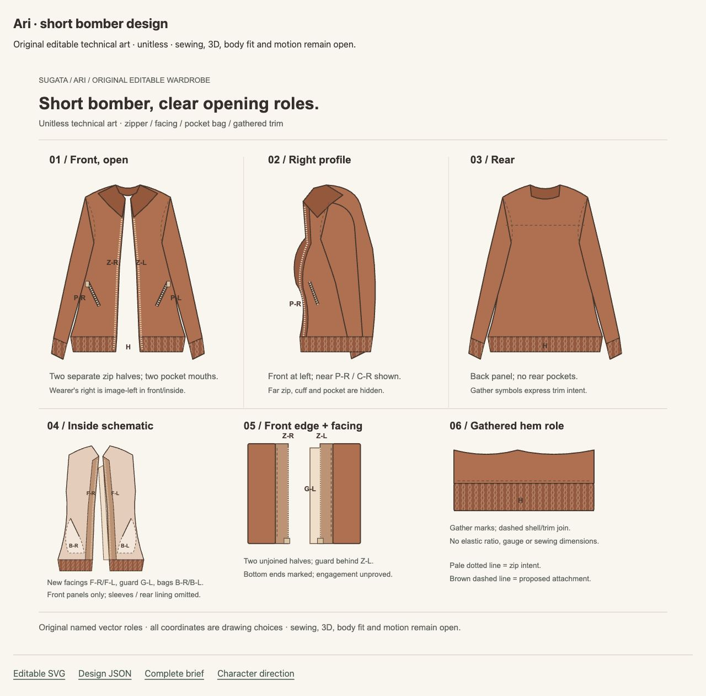

Ari · appearance priorities
Next priority: wardrobe source ownership. Keep the current body unchanged and the neutral control visible. The reference's clothing contributes to its silhouette; it cannot prove underlying anatomy or that the body target has passed.
This is a source-priority brief. No garment, source lookup, geometry, fit solver or native job is selected. The short bomber's drawing roles are original unitless technical art, with 3D, fit and motion still open.

Original character direction
Short rust outer layer, gray underlayer, generous ink trousers and compact curls. Qualitative reference, not measured anatomy or fitted source.
Current control stays visible
Material 0.5, expression 0. The v2 body-form target is unqualified. Clothing must not conceal that remaining responsibility.
Concrete design vocabulary
Collar, open zipper halves, pocket mouths and gathered trim. Authored facing/guard/bag proposals; no manufacturing, registered dimensions or wearable-fit proof.